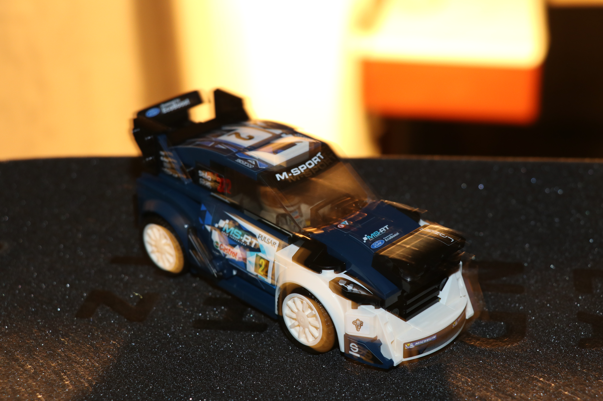
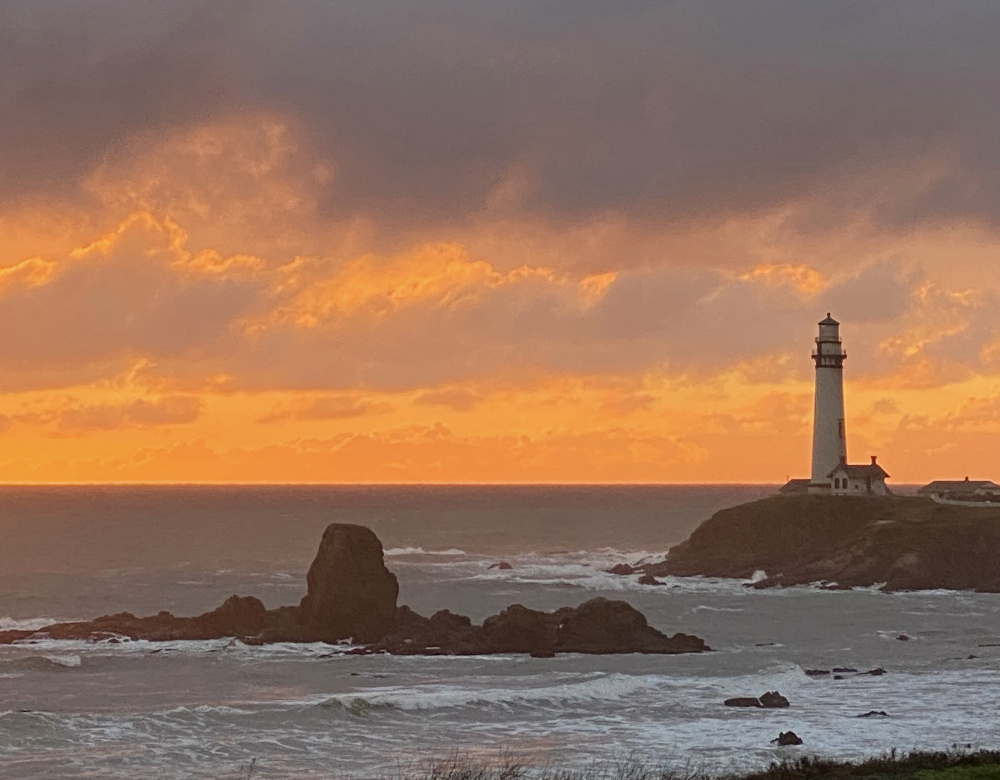
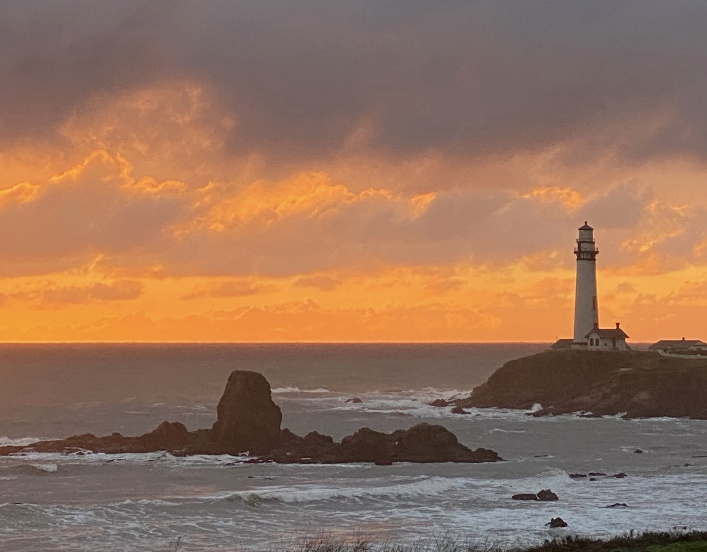
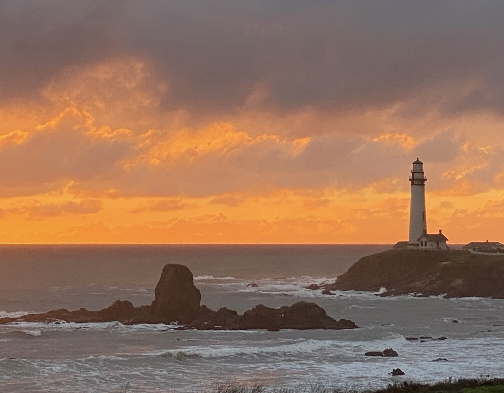

Zihan Guo
I'm a junior editor. Produced advertising videos for some advertising companies. In 2018, I worked in my uncle's company for 6 months. I made a promotional poster for the company and made an advertising video. Among them, shooting, editing, recording and production are all done by me and my partner. At the same time, I also accept the publicity work of other companies. For example, make promotional short videos, company introduction videos, advertisements and company posters, etc. I can easily respond to various requests from Party A.
In 2016, I participated in the municipal high school micro film competition and won the third prize. During this experience, I was not just an editor on the team, but a leader. I lead a team of 10 people through the whole film. During the production of the short film, we did not receive any sponsorship, everything was done by ourselves. This experience has improved our team's cooperation ability, increased team cohesion, and exercised my personal leadership ability. I am very confident in leading the team. I am good at coordinating the relationship between team members, discovering problems early and solving problems when they happen.
In February 2019, I practiced at Henan TV Station for 5 months. During these 5 months, I worked as camera assistant, post editor, on-set director and on-set assistant. I can use CG technology to edit and create feature films. Independently complete the production of the entire film, including the opening and ending credits. Proficiency in operating nonlinear Final cut pro 7.0, avid. I am also proficient in the workflow of tape laying, collection, and tape output. Experience in the production of small TV programs has been accumulated. On set, I need to coordinate everyone's appearance time, and I also need to manage the normal operation of the shooting equipment and lighting equipment. Most of the time I was in the group that was recording the show. I also have experience working with live broadcast shows. Live programs generally have more emergencies. I am very good at responding to emergencies and coordinating staff to deal with them. In addition, I also contributed to the operation of the official short video account of the TV station. I will edit videos according to daily hot topics and popular styles, and use Ae, Pr, AI, PS, AE, Sketch and other software to complete the production of videos. While working in the short video promotion department, the number of fans on the official account increased by 300W+, and the growth rate was 64% month-on-month. With strong copywriting skills and a good sense of rhythm, it is easier for me to grasp the psychology of the audience. The average push volume of a single video is 40W+. Belt yield up to 20000. I love the media industry very much, work actively and conscientiously, and have a strong sense of teamwork. I also have strong analytical skills, and I have a strong perception of hot topics and hot editing styles.
Experience
Post Editing & Production
• TV show post-production
• short video clip
• Assisting with the live broadcast of the program
Volunteer Publicize
• Responsible for disseminating more news and news about UNICEF releases.
• Mainly advertised on Facebook.
Volunteer adoption customer service
• Publicity Contact Information
• Forward adoption information
• Let more people know that stray pets need to find a new home
• Reply to prospective adopters
Education
Foothill College
University of California Riverside
Xiping County High School
Photography

 

